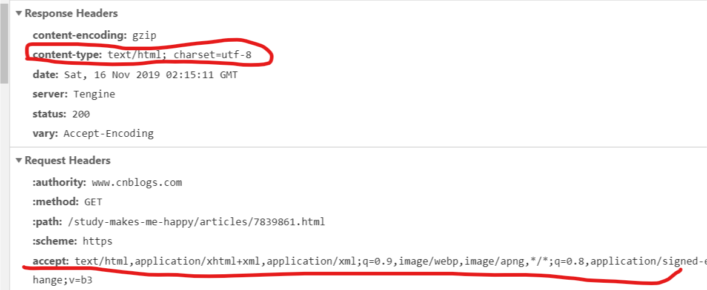
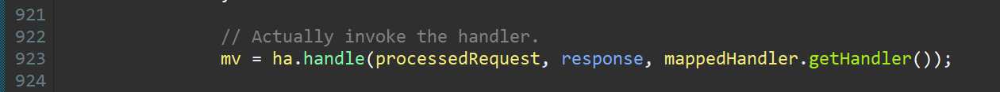
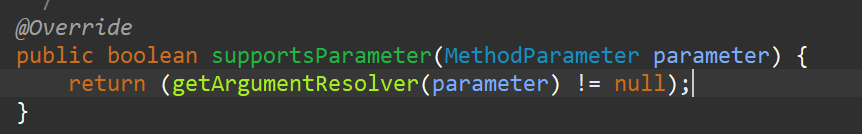
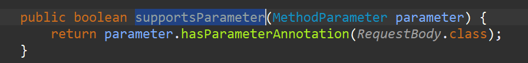
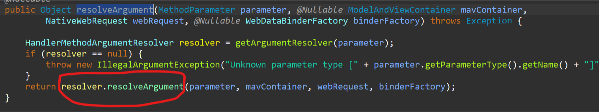
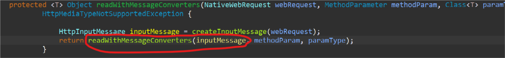
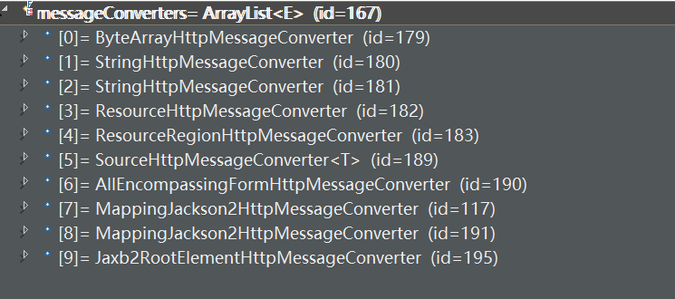

又到了很无聊的时候了，于是随便看看源码假装自己很努力的样子，哈哈哈；
记得上一篇博客随便说了一下RequestBody的用法以及注意的问题，这个注解作为非常常用的注解，也是时候了解一波其中的原理了。
温馨提示：阅读本篇博客，默认你之前大概看过springmvc源码，懂得其中的基本流程
1.HttpMessageConverter接口
这个接口就是@RequestBody和@ResponseBody这两个注解的精髓，我们就先看看这个顶层接口定义了哪些方法：
public interface HttpMessageConverter<T> {
//判断当前转换器是否可以解析前端传过来的数据
boolean canRead(Class<?> clazz, @Nullable MediaType mediaType);
//判断当前转换器是否可以将后端数据解析为前端需要的格式
boolean canWrite(Class<?> clazz, @Nullable MediaType mediaType);
//当前转换器能够解析所有的数据类型
List<MediaType> getSupportedMediaTypes();
//这个方法就是读取前端传过来的数据
T read(Class<? extends T> clazz, HttpInputMessage inputMessage) throws IOException, HttpMessageNotReadableException;
//将后台数据转换然后返回给前端
void write(T t, @Nullable MediaType contentType, HttpOutputMessage outputMessage) throws IOException, HttpMessageNotWritableException;
}
我们从这个顶层接口中这几个方法就大概能看到一些东西，可以肯定的就是在@RequestBody和@ResponseBody这两个注解原理的内部转换器应该都是实现了这个HttpMessageConverter，因为这个接口里又是read，又是write；然后就是在上面我只是简单说了前端传过来的数据，返回给前端需要的格式这种模糊的说法，为什么不直接说返回json格式的数据呢？
哈哈，可能有的小伙伴会说，玛德，你绝逼是怕说错，才说这些模糊的说法；咳，当然有部分是这个意思，但是最大的原因就是上面方法参数中有个类MediaType，你打开看看就知道了，这里定义了很多的可以解析的数据类型，比如"application/json"，"application/xml"，"image/gif","text/html"....等等，还有好多听都没听过的；
其实了解http请求的小伙伴应该已经看出来了，这里这些数据类型就是下图所示的这些；当然，我们暂时只关注json的，至于其他类型的怎么解析有兴趣的小伙伴可以研究研究；

2.HandlerMethodArgumentResolver接口
我们看看这个接口，看名字就知道应该是方法参数解析器，很明显就是用于解析方法Controller中方法的参数的，还是简单看看这个接口中的方法：
public interface HandlerMethodArgumentResolver {
//该解析器是否支持解析Controller中方法中的参数，因为这里参数类型可以是简单类型，也可以是集合等类型
boolean supportsParameter(MethodParameter parameter);
//开始解析Http请求中的数据，解析出来的数据要和方法参数对应
Object resolveArgument(MethodParameter parameter, @Nullable ModelAndViewContainer mavContainer, NativeWebRequest webRequest, @Nullable WebDataBinderFactory binderFactory) throws Exception;
}这个接口定义的方法作用其实就是将http请求中的参数对应到Controller中的参数
3.HandlerMethodReturnValueHandler接口
public interface HandlerMethodReturnValueHandler {
//这个方法判断该处理器是否支持返回值类型，这里的返回值就是controller方法执行后的返回值
boolean supportsReturnType(MethodParameter returnType);
//将controller方法的返回值进行解析成前端需要的格式，后续就会丢给前端
void handleReturnValue(@Nullable Object returnValue, MethodParameter returnType, ModelAndViewContainer mavContainer, NativeWebRequest webRequest) throws Exception;
}这个接口的作用：比如一个Controller方法中的返回值是一个集合，那么springmvc内部在将数据返回给前端之前，就会先拿到所有的返回值解析器，然后遍历每一个，分别执行supportsReturnType方法，看看哪个解析器可以解析集合类型，找到解析器之后，然后再执行handleReturnValue方法解析就行了，其实2中的方法参数解析器也是这样的一个步骤
4.ServletInvocableHandlerMethod类
这个类是干什么的呢？看过springmvc源码的人应该知道一点，还是简单说说吧，在springmvc中会将controller中的每个被RequestMapping注解修饰的方法（也可以叫做处理器）给封装成ServletInvocableHandlerMethod类，封装后想要执行该处理器方法只需要执行该类的invokeAndHandle方法;
请注意：就是在invokeAndHandle这个方法中会调用：调用方法参数解析器------>执行处理器方法-------->调用返回值解析器、
可以简单看看源码，请一定要了解springmvc的流程，因为我不会从头到尾讲一遍，我们直接从DispatcherServlet中的doDispatch方法的ha.handle（xxx）这里说起，这里主要是执行处理器适配器的handle方法，这里具体的处理器适配器实现是：AbstractHandlerMethodAdapter

我们进入AbstractHandlerMethodAdapter这个适配器的handle方法看看(^o^)／：
//可以看到这里就是调用了handleInternal方法，而handleInternal方法未实现
public final ModelAndView handle(HttpServletRequest request,HttpServletResponse response, Object handler)throws Exception {
return handleInternal(request, response, (HandlerMethod) handler);
}
//这个方法在子类RequestMappingHandlerAdapter中实现
protected abstract ModelAndView handleInternal(HttpServletRequest request, HttpServletResponse response,HandlerMethod handlerMethod) throws Exception;
接下来我们看看RequestMappingHandlerAdapter中实现的handleInternal方法(」゜ロ゜)」：
protected final ModelAndView handleInternal(HttpServletRequest request, HttpServletResponse response,HandlerMethod handlerMethod) throws Exception {
//省略跟逻辑无关的代码
.......
.........
return invokeHandlerMethod(request, response, handlerMethod);
}
进入invokeHandlerMethod方法看看(´･_･`)：
private ModelAndView invokeHandlerMethod(HttpServletRequest request, HttpServletResponse response,HandlerMethod handlerMethod) throws Exception {
ServletWebRequest webRequest = new ServletWebRequest(request, response);
WebDataBinderFactory binderFactory = getDataBinderFactory(handlerMethod);
ModelFactory modelFactory = getModelFactory(handlerMethod, binderFactory);
ServletInvocableHandlerMethod requestMappingMethod = createRequestMappingMethod(handlerMethod, binderFactory);
ModelAndViewContainer mavContainer = new ModelAndViewContainer();
//省略一些代码
//就是再这里去执行Controller中的处理器方法
requestMappingMethod.invokeAndHandle(webRequest, mavContainer);
//此处省略好多代码
}
继续进入到invokeAndHandle方法内部看看╮(╯_╰)╭：
public final void invokeAndHandle(NativeWebRequest request, ModelAndViewContainer mavContainer,Object... providedArgs) throws Exception {
//请注意，这里面就是执行handler方法的位置
Object returnValue = invokeForRequest(request, mavContainer, providedArgs);
//省略一些代码
try {
//这里就是执行我们前面说的返回值解析器
returnValueHandlers.handleReturnValue(returnValue, getReturnType(), mavContainer, request);
}
//省略一些代码
}
看看invokeForRequest方法你就能看到有趣的东西ヽ(”`▽´)ﾉ
public Object invokeForRequest(NativeWebRequest request, @Nullable ModelAndViewContainer mavContainer, Object... providedArgs) throws Exception {
//这里就是从request中拿到参数，利用方法参数解析器进行解析，映射到方法参数中，这个方法就在下面
Object[] args = getMethodArgumentValues(request, mavContainer, providedArgs);
//省略一些代码
//这里就是根据上一步将请求参数映射到处理器方法参数中，然后执行对应的处理器方法
Object returnValue = doInvoke(args);
//省略一些代码
return returnValue;
}
private Object[] getMethodArgumentValues(NativeWebRequest request,@Nullable ModelAndViewContainer mavContainer,Object... providedArgs) throws Exception {
//这里获取匹配到的handler方法的参数数组，每个参数在之前都被封装成了一个MethodParameter对象，然后再遍历这个数组，将其中每个MethodParameter和http请求提供的参数进行比较，
至于怎么比较，就会用到之前说的参数解析器的那个support方法
MethodParameter[] parameters = getMethodParameters();
Object[] args = new Object[parameters.length];
for (int i = 0; i < parameters.length; i++) {
MethodParameter parameter = parameters[i];
parameter.initParameterNameDiscovery(this.parameterNameDiscoverer);
args[i] = resolveProvidedArgument(parameter, providedArgs);
if (args[i] != null) {
continue;
}
if (this.argumentResolvers.supportsParameter(parameter)) {
try {
args[i] = this.argumentResolvers.resolveArgument(
parameter, mavContainer, request, this.dataBinderFactory);
continue;
}
//省略一些代码
return args;
}
其实到这里，有木有感觉清晰一点了，那么肯定有小伙伴要问了，说了半天，你还是没有说json是怎么解析的啊？
不要急，我们先把大概的流程过一遍之后，后面的都是小问题，那么，我们的转换器是在哪里转换的呢？
欲知后事如何，请往后面看
5.无题
在4中我们重点看两个地方，第一个地方：this.argumentResolvers.supportsParameter(parameter)；第二个地方：this.argumentResolvers.resolveArgument(parameter, mavContainer, request, this.dataBinderFactory);
5.1.RequestResponseBodyMethodProcessor
第一个地方，我们点进去supportsParameter方法，

然后我们进入getArgumentResolver方法内部（´□｀川）：
@Nullable
private HandlerMethodArgumentResolver getArgumentResolver(MethodParameter parameter) {
HandlerMethodArgumentResolver result = this.argumentResolverCache.get(parameter);
if (result == null) {
//for循环遍历所有的方法参数解析器，
for (HandlerMethodArgumentResolver methodArgumentResolver : this.argumentResolvers) {
//省略一些代码
//判断哪一个解析器支持解析request中的参数，这里很关键，因为众多解析器中其中有一个参数解析器是RequestResponseBodyMethodProcessor，
//下面我们看看这个解析器的supportParameter方法
if (methodArgumentResolver.supportsParameter(parameter)) {
result = methodArgumentResolver;
this.argumentResolverCache.put(parameter, result);
break;
}
}
}
return result;
}
RequestResponseBodyMethodProcessor的supportsParameter方法，这里想必能看得懂吧，就是看Controller中的处理器方法中的参数前面有没有RequestBody注解，有注解，那么这个RequestResponseBodyMethodProcessor解析器就会生效
对了，补充一点，这个解析器RequestResponseBodyMethodProcessor可是同时实现了方法参数解析器接口、返回参数解析器接口的哦，这说明了处理返回值解析器用的也是这个解析器

5.2.执行argumentResolvers.resolveArgument()方法

//这个方法就到了最关键的地方了，注意了注意了
public Object resolveArgument(MethodParameter parameter, ModelAndViewContainer mavContainer,NativeWebRequest webRequest, WebDataBinderFactory binderFactory)
throws Exception {
//获取一个转换器，用于读取前端传过来的json数据
Object arg = readWithMessageConverters(webRequest, parameter, parameter.getParameterType());
//获取handler方法形参中的所有注解，例如@Valid。@PathVariable等
Annotation[] annotations = parameter.getParameterAnnotations();
for (Annotation annot : annotations) {
//判断如果是以valid开头的注解，其实就是@Valid注解或者是@Validated注解，那么就会去校验是否符合规则嘛，这个不用多说
if(annot.annotationType().getSimpleName().startsWith("Valid")) {
String name = Conventions.getVariableNameForParameter(parameter);
WebDataBinder binder = binderFactory.createBinder(webRequest, arg, name);
Object hints = AnnotationUtils.getValue(annot);
binder.validate(hints instanceof Object[] ? (Object[]) hints : new Object[] {hints});
BindingResult bindingResult = binder.getBindingResult();
if (bindingResult.hasErrors()) {
throw new MethodArgumentNotValidException(parameter, bindingResult);
}
}
}
return arg;
}最后我们只需要轻轻点开readWithMessageConverters方法，就能看到更有意思的东西~^o^~
6.xxxConverter
我们进入readWithMessageConverters这个方法，

@SuppressWarnings("unchecked")
protected <T> Object readWithMessageConverters(HttpInputMessage inputMessage, MethodParameter methodParam, Class<T> paramType) throws IOException,
HttpMediaTypeNotSupportedException {
//这里回答了本篇最开始说的MediaType 到底是什么东西，从哪里获取的，很明显是从请求头中的ContentType获取的
MediaType contentType = inputMessage.getHeaders().getContentType();
if (contentType == null) {
contentType = MediaType.APPLICATION_OCTET_STREAM;
}
//获取所有的HttpMessageConverter，遍历，看看哪一个转换器支持前端传过来的数据类型
for (HttpMessageConverter<?> messageConverter : this.messageConverters) {
if (messageConverter.canRead(paramType, contentType)) {
//调用对应的转换器的read方法去把前端传过来的json字符串转为java对象
return ((HttpMessageConverter<T>) messageConverter).read(paramType, inputMessage);
}
}
//省略一些代码
}
到了这里肯定有人会说，那到底用的是哪一个转换器呢？难道是要我们自己导入？还是默认已经导入转换器了呢？
当然是默认就为你初始化了一些转换器了啊，如果你想自定义也行，而且仔细看看下图中跟json有关的只有MappingJackson2HttpMessageConverter这个转换器了，可想而知这个转换器(实际上是这个转换器的父类方法中才有具体的操作)中使用的就是开源的Jackson来将json字符串转为java对象的，有兴趣了解的可以使用一下Jackson自己尝试一下；
偷偷告诉你(҂ ˘ _ ˘ )，springboot默认已经导入了Jackson包，如果你后期想用其他的转换器，只需要导入相关依赖就ok了；

7.结束
这篇博客到这里就差不多了，写了好久，边写边查资料，可以说每次看源码都能学到新的东西，当然，我也没有死磕精神，不是不想，主要是没有那个水平，哈哈；
其实还要写还能写，不是还有个@ResponseBody原理还没说吗？其实跟@RequestBody大同小异的，有兴趣的可以在第4点最后的代码中返回值参数处理器方法，这里就是入口
话说还有个问题没有解决，本来我想找一下最后的那几个转换器初始化时机的，然后实在是找不出来啊，查了一下资料，都说是在处理器适配器的构造器中初始化这些转换器的，哎，jdk1.8，我在适配器中找了好久，愣是没找到，打断点也调试不出来，把自己坑了好久；
有没有大哥知道初始化时机的，评论一下，谢谢了(ㄒoㄒ)